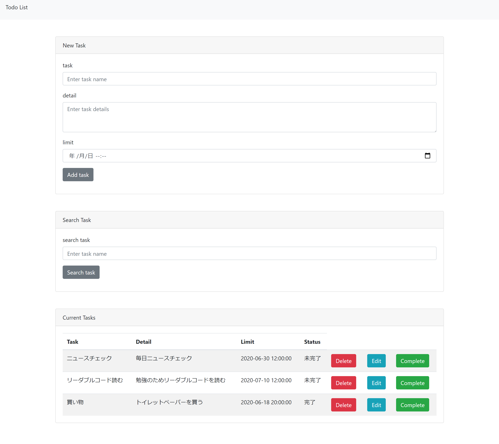
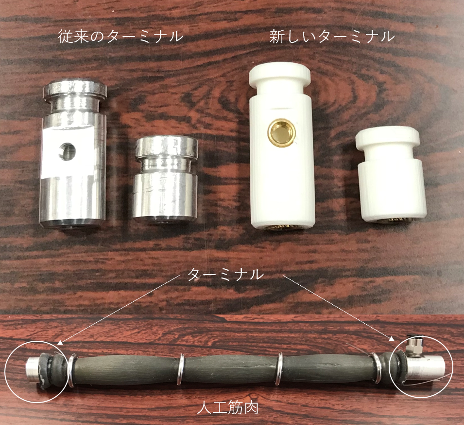

- 


- 
こちらは、歩数管理システム「Steple」です。
Stepleは歩数（Step）を簡単に（Simple）に管理したいという思いから名前を付けました。
言語はPHP7.3.3、JavaScript。フレームワークはLaravel7.11.0。その他は、bootstrap4、Chart.js、Sourcetree、GitHubを使用しました。
こちらがStepleのリンクです。
こちらがGitHubのリンクです。
こちらは、自動チャイム叩き機「ささとら君」です。
製作背景は、今まで仕事の始業・終業は手動でチャイムを鳴らして全体に知らせていました。
アラームを使用するのもよかったのですが、あえてこのチャイムをならす動作を自動化したらおもしろいだろう、
またラズベリーパイを使って何か作ってみたいと思い挑戦しました。（頼まれたわけではなく、同期と二人で製作しました。）
製作期間は1日です。 使用言語はPython3。クーロンタブを用いて、指定時間にプログラムが作動するよう設定しています。
使用したものは、ラズベリーパイ・サーボモータSG90、チャイムセットです。
こちらがGitHubのリンクです。
こちらは、Todoアプリです。Laravelの学習用に作成しました。
使用言語はPHP7.3.3。フレームワークはLaravel7.11.0です。製作期間は、1週間です。
こちらがGitHubのリンクです
こちらは、ドットインストールのサイト模写です。これは実際にあるサイトをソースコードを見ないで、自分のできる範囲(見た目のみ)で模写しました。
使用言語はHTML/CSSです。製作時期は2018年秋ごろです。
こちらから確認できます。
こちらは、大学の講義での成果物として作ったニュートン法のプログラムです。
ニュートン法とは方程式を近似的に解くアルゴリズムです。今回はx*x-2sin(x)-4=0の解を求めています。
(初めてPythonの英語の論文を読んだときはプログラミング言語だとは知らずにニシキヘビと間違えて訳して読んでいました笑)
ただ解を求めるだけではなく出力結果をグラフにプロットするようにしました。
x軸はiの値[回数]、y軸はlog10(f(a)の値[誤差]です。誤差がある数値以下[e-12]になるとそこでプログラムが終了します。
使用言語はPythonです。製作時期は2018年6月です。
こちらはターミナルという人工筋肉に使用する部品です。私の所属していた研究室では物を作る際、市販の部品だけではなく学生自作の部品も使用しています。
左の部品（銀色）が以前使用していた部品ですが１セット作るのに１時間もかかってしまう問題点がありました。原因は高度で複雑な加工が必要だったからです。
そこで私が新しい部品の開発に挑戦したいと申し出て左の新部品（白色）を開発しました。大部分を３Dプリンターを使用して制作したためデータさえあれば誰でも簡単に大量生産できるようになり
１セットおよそ５分で加工(制作)可能になりました。
製作時期は、2018年11月です。製作期間はおよそ1カ月です。
部品開発の知識はなくCADの学習や様々な問題点の解決に苦労しましたがこの経験のようにこれからも積極的に様々なことに挑戦し続けたいと思います。